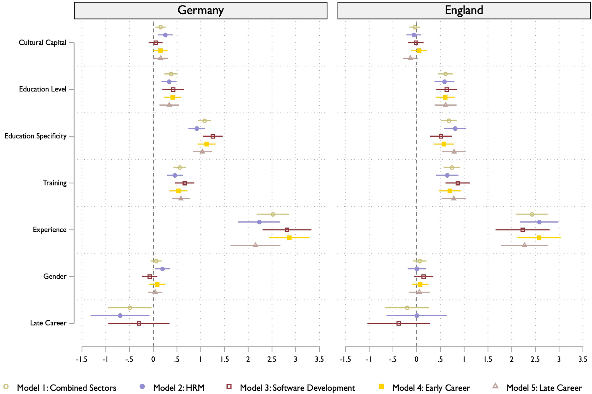
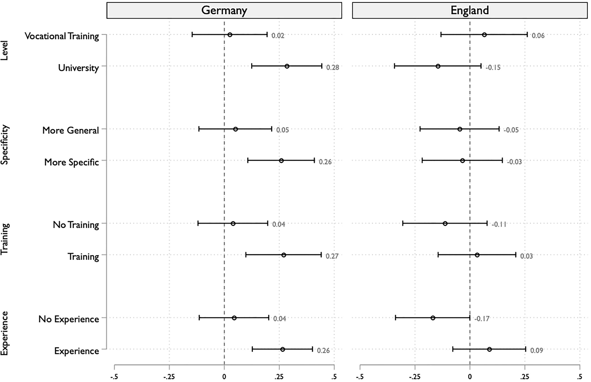
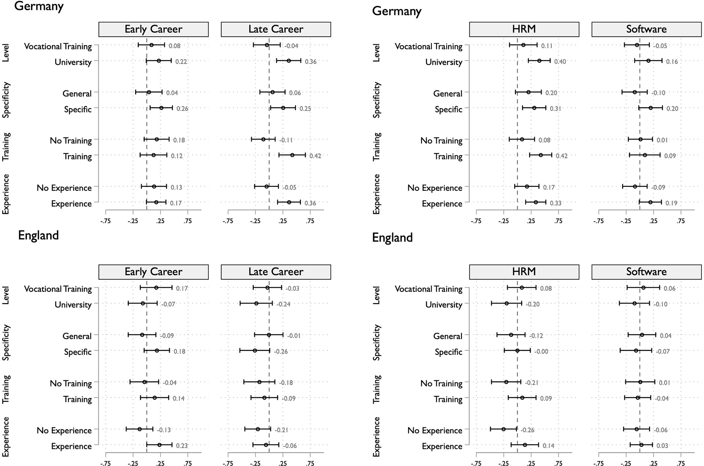

Cultural and Human Capital Signals in Hiring
A Factorial Survey Experiment Across Contexts
Burchartz L, De Keere K, Geven, S. 2026. Br. J. Sociol.
2026/06/10
問い
- 採用はゲートキーピングの場であり，労働市場の不平等生成の鍵 (Bills et al. 2017; Rivera 2020)
- 採用担当者は人的資本だけでなく文化資本シグナルにも依拠
- 先行研究は両者を別々に扱ってきた
RQ：採用担当者は，異なる人的資本シグナルのもとで，文化資本シグナルをどう評価するのか？
- 鍵は両者の 交互作用——エリート職以外でこそ重要に
なりうる
文化資本シグナル
- 文化資本とは「正統な知識・技能・趣味の所有」
- 文化資本シグナルは現在の階級的位置と出身階級を結びつける
- 採用プロセスでは 名前・余暇活動・学歴・応募書類の美的要素 などから観察可能
- ハイブラウなシグナルは二重に作用
- 社会空間への位置づけ
- ステレオタイプの喚起（有能さ・洗練・規律，ときに冷たさ・傲慢さも）
シグナルの文脈依存性
- 文化資本シグナルは普遍的通貨ではない (Erickson 1996)
- 価値を左右する要因
- ジェンダー（ステレオタイプの内容が変わる）
- 界（評価のされ方が異なる）——cultural matching
- 労働者理想像（例：ソフトウェアの「オタクの若い男性」，金融の「上流階級の男性」）
- とくに知識の曖昧性が高く，対面性が強い職種で洗練（polish）の価値が増幅
文化資本と人的資本の相互作用
階層研究の2つのメカニズム
乗算（multiplication）
- 高文化資本は高人的資本があって初めて報われる
- Reeves & De Vries (2019)：文化的消費の便益は大卒者のみ
補償（compensation）
- 文化資本が人的資本の不足・曖昧さを埋める
- Fossati et al. (2020)：親の上流職が訓練市場のシグナル不足を補償
社会移動のシグナル
- 文化資本と人的資本の組み合わせは移動パターンを示唆しうる
- 上昇移動（低い出身 × 高い人的資本）
- 「期待以上の達成」→ 有能・勤勉と評価される可能性（メリトクラティックな物語）
- 下降移動（上流の出身 × 低い人的資本）
- メリトクラシー信念の強い社会で顕著になりうる
コンテクスト①：キャリア段階
- 早期キャリア（約25歳）／後期キャリア（約55歳）
- Friedman & Laurison (2020)：キャリアが進むほど出身階級の重要性が増す
- 後期キャリア：拡張された役割・地位期待・勤続年数
- 一方で高齢労働者には「訓練可能性が低い」というステレオタイプ
コンテクスト②：セクター
ともに中間層の知識労働／資格・免許要件なし → 交互作用を観察するための most-likely case
ソフトウェア開発
- 「オタクの若い男性」像
- 技能・専門性の評価基準が明確
- 文化資本の役割は小さいと予想
人事（HRM）
- 女性中心 + 管理職的伝統
- 知識基準が曖昧，対面性が高い
- 文化資本の役割は大きいと予想
コンテクスト③：国
- ドイツ：雇用主が教育課程に関与，職業的資格が高評価．資格と「スキルがあること」が結びつく
- イングランド：職場で技能を学ぶ，学習意欲・能力が重視される
- 階級アイデンティティ
- イングランド：多くが労働者階級を自認 → 階級を控えめに表現
- ドイツ：中間層の自認が最多
- ※ 主目的は比較ではなく，交互作用がいかに文脈依存かを示すこと
方法：要因配置実験
- 採用者が架空候補者のヴィネットを評価
- 複数の属性を同時に重みづけ→ 評価過程の検証に適合，社会的望ましさバイアスを低減
- 観察データでは分離困難な文化資本／人的資本シグナルを独立に操作可能
- 従属変数：採用の見込み（0–10）
- ランダム切片モデル，ヴィネットセットを統制
- 分析単位はヴィネット（N = 回答者 × 8）
ヴィネットの7次元（Table 1）
| 文化資本 |
低／高 |
| キャリア段階 |
早期／後期（回答者間で変動） |
| 教育レベル |
職業訓練／大学 |
| 教育の専門性 |
一般的な分野／職種に密接に関連した専門分野 |
| 訓練参加 |
記載なし／直近1年に職種に関連した集中訓練 |
| 職務経験 |
隣接分野・他社／同職種・同社 |
| ジェンダー |
男性／女性 |
- 64ヴィネット（26），state-of-the-art D-efficient design (lol) で8ブロック×8に分割
文化資本の操作化（Table 2）
- 名前 ＋ 余暇活動の組み合わせ（一貫）
- 「友人と」を付加し社交性を統制
| 余暇例 |
TV，ジム，カントリー／シュラーガー音楽，サッカー観戦，ランニング／サイクリング，ダーツ |
ゴルフ，劇場，クラシック音楽，セーリング，テニス，美術館 |
| 名前（ドイツ） |
Justin, Kevin, Chantal … |
Ferdinand, Konstantin, Charlotte … |
| 名前（イングランド） |
Wayne, Sharon, Chantelle … |
Rupert, Arabella, Penelope … |
サンプリングとデータ
- 直近12か月に当該分野で採用経験のある者
- 調査時期：2024年5–9月
| ドイツ |
求人広告のメール（連邦雇用エージェンシー） |
99 |
94 |
| イングランド |
LinkedIn ＋ Prolific |
96 |
75 |
推定
- 主効果：国別モデル（セクター・キャリアを統制）→ セクター別 → 早期／後期別
- 交互作用：文化資本 × 人的資本 {教育レベル・専門性・訓練・職務経験}
- 多重検定による第1種の過誤を抑えるため
- まず結合Wald検定で4つの交互作用が「まとめて」0と異なるか検定
- 結合検定が有意な場合のみ個別交互作用を解釈する方針
- 文化資本の限界効果を人的資本水準ごとに算出
主効果

Fig 1. Main effects for the vignette dimensions by country, sector and career stage
主効果
- 多くのコンテクストで文化資本シグナルは有利に働かない
- イングランド：両分野でほぼゼロ（HR −0.06，ソフトウェア −0.02）
- ドイツ：平均では正に効くが…
- ソフトウェア = ゼロ，HRMで顕著（+0.25，5.78→6.04）
- 人的資本は全コンテクストで評価される
交互作用｜国別
ドイツのみ結合検定が有意（p = 0.008）→ 乗算パターン

Fig 2. Marginal effects of cultural capital signals as dependent on human capital signals across countries
ドイツでは高い人的資本のときだけ文化資本が正に効く（乗算）．イングランドは概ねゼロ近傍．
交互作用｜国・キャリア・セクター別

Fig 3. Marginal effects of cultural capital signals as dependent on human capital signals across countries, by career and sector
ドイツの後期キャリアで乗算が明確
限界
- 概念化：名前（出身）と現在の文化的実践を固定的に結合→ 両者を分離できない
- 社会的望ましさ：ドイツでは過小推定の可能性，イングランドでは望ましさに沿う回答の可能性
- サンプリング：低回収率，国間で手法が異なる（Prolific使用）
- 検定力：交互作用で小さな効果を検出できない可能性（第2種の過誤）
- 一般化可能性：2つの業種に限定 → ブルーカラーや出身強調デザインが今後の課題